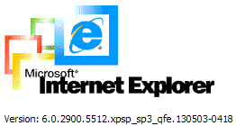
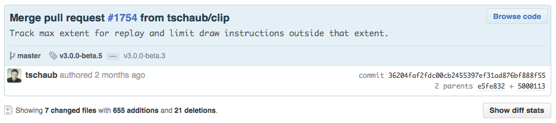

OpenLayers 3
and why Open Source makes a difference
Andreas Hocevar, Boundless
Old & New
OpenLayers 2.x
-
Very popular JavaScript library for
dynamic, web based mapping applications
- Version 2.0 ⇒ 7.5 years ago
OpenLayers 2.x
- Now at version 2.13.
- > 6.000 commits, ~100 contributors.
- Dozens of layer types, controls, formats.
- And mobile support.
- And books:


But…
- Based on browser technology from 10 years ago
- A lot of legacy code


…hence…
We want a new OpenLayers!
ol3
- under developemnt since ~ 1.5 years
- partially crowdfunded
- 4 alpha & 5 beta releases
- ol3js.org
What is new?
- more or less: everything
- Comprehensive rewrite from scratch
- Format unit tests taken from OpenLayers 2
What is new?
- Google Closure Library (Gmail, Google Maps)
- Google Closure Compiler
- jsdoc3
- WebGL
- Cross-platform by design
- No hard-coded styling - pure CSS
What stays the same?
- Geospatial at the core
- Support for projections, OGC standards, ...
- The core developers
The core developers?
What about twpayne and tschaub?
Open Source software is owned by the developers, not the companies they work for.
⇒ They are still core developers and still involved.
So where is the final 3.0 release?
Open Source and release cylces
Open Source and release cylces
- Low version numbers are common in Open Source
- Leaflet is at release 0.7
- OpenLayers is at v3.0.0-beta.5
- Package maintainers can run their own QA and release cycle - Boundless does this for GeoServer too
Some examples and tech highlights
Hello World
 ol3js.org/en/master/examples/simple.html
ol3js.org/en/master/examples/simple.html
Code
var map = new ol.Map({
layers: [
new ol.layer.Tile({
source: new ol.source.OSM()
})
],
target: 'map',
view: new ol.View2D({
center: [0, 0],
zoom: 2
})
});
Vector tiles
http://ol3js.org/en/master/examples/tile-vector.htmlPerformance Replay-API
 http://ol3js.org/en/master/examples/fractal.html
http://ol3js.org/en/master/examples/fractal.html
Performance Replay-API
 http://git.io/OY6NVAPerformance R-Tree
https://github.com/imbcmdth/RTreePerformance R-Tree
https://github.com/mourner/rbushpre-/postcompose API
http://ol3js.org/en/master/examples/layer-spy.htmlReady for production?
- All important features are implemented
- Good test coverage to insure code quality
- New build tool for custom builds now available
- Online build tool and nicer API docs ETA soon